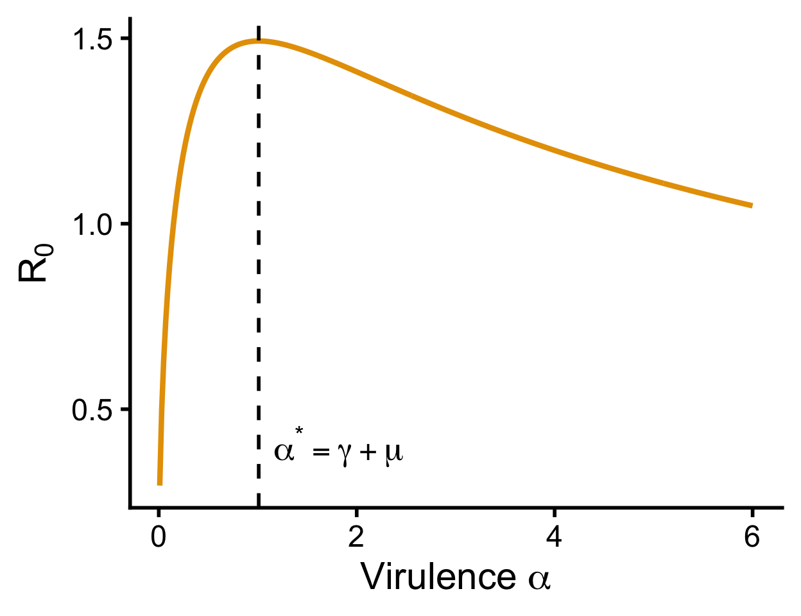
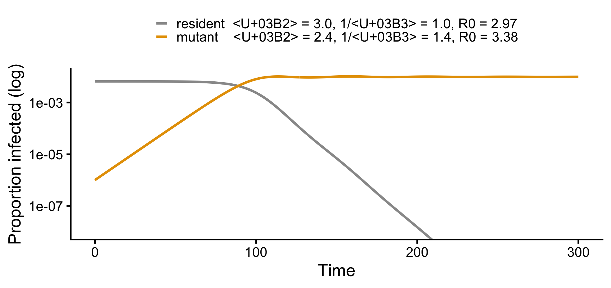
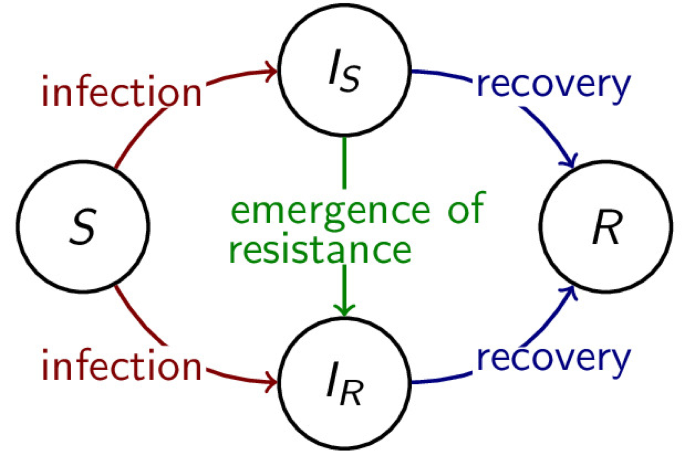
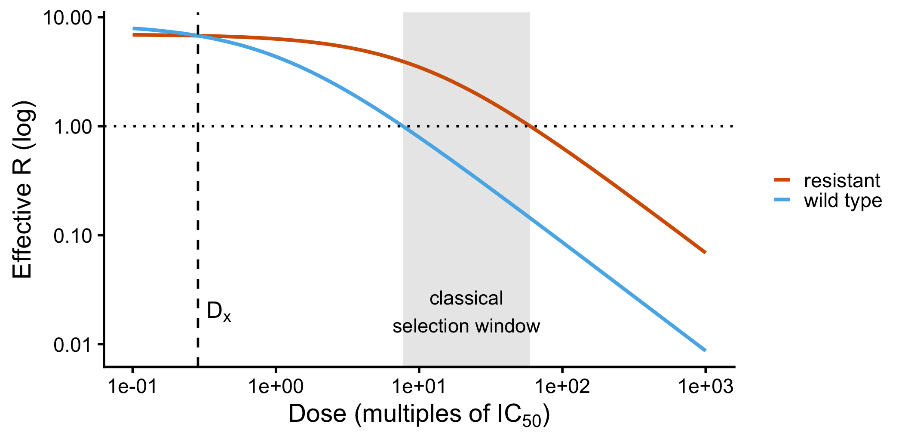
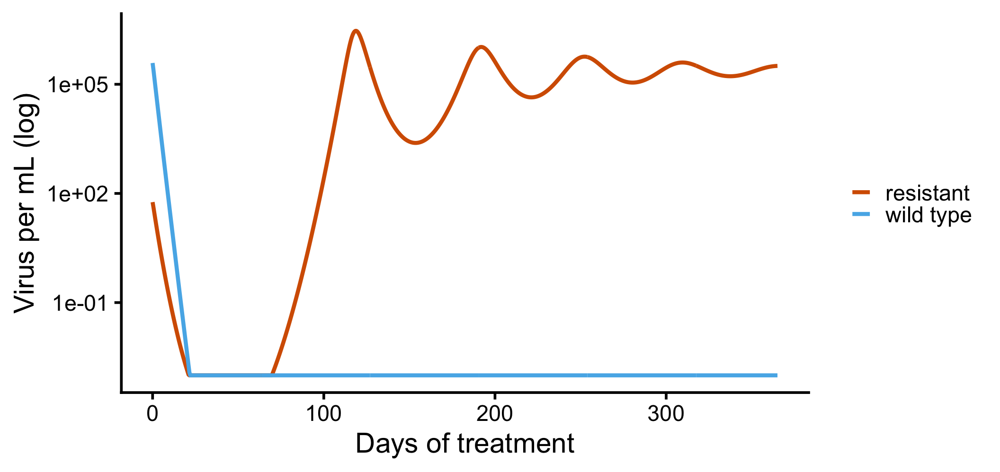
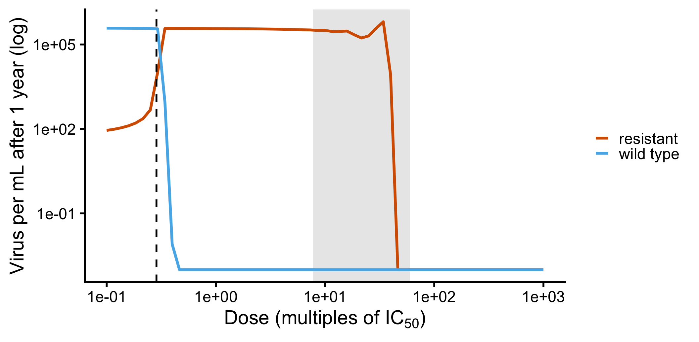
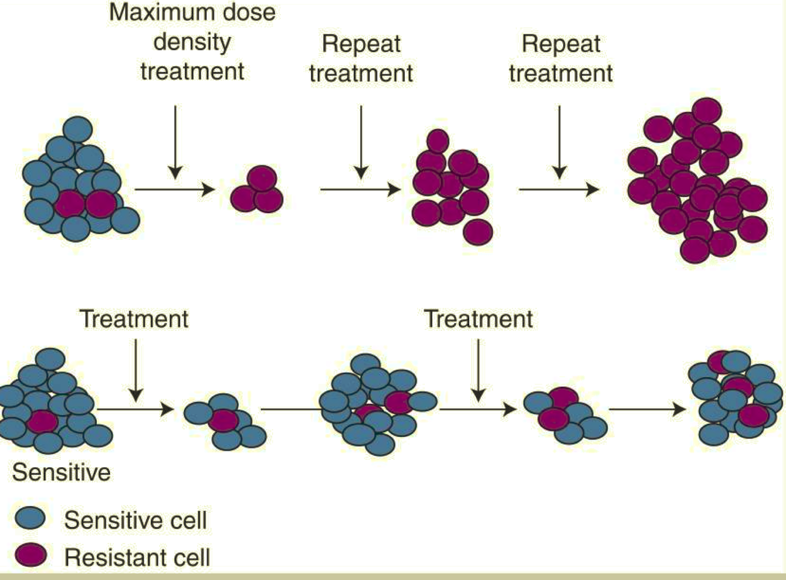
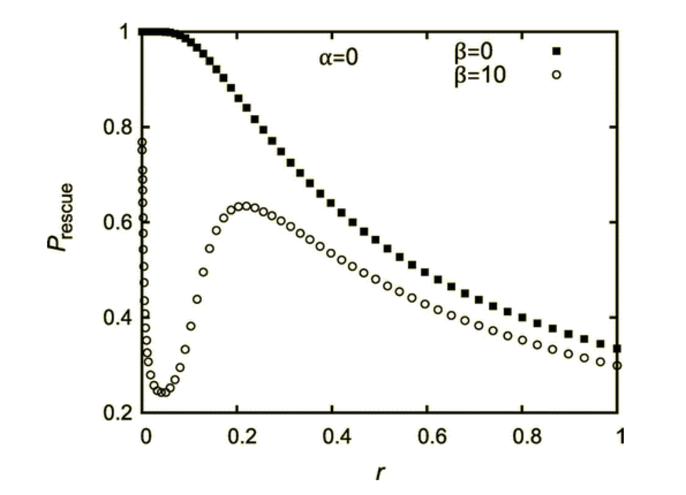
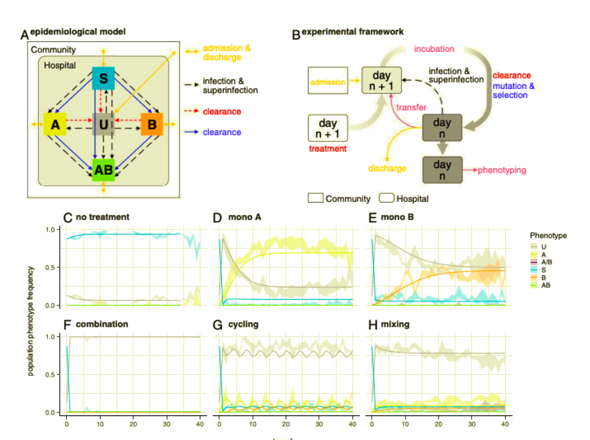

Computational Epidemiology · Lecture 3
Day 1
Today: the pathogen evolves
One message: in both cases the winner is the strain with the larger reproduction number, and whether it gets the chance to win is a Day 1 question.
A mutant strain appears in a population where a resident strain is endemic.
When does the mutant take over?
Examples: SARS-CoV-2 variants replacing each other; seasonal influenza lineages; myxoma virus in Australian rabbits.
\[ \begin{aligned} \frac{dS}{dt} &= \mu - (\beta_1 I_1 + \beta_2 I_2) S - \mu S \\[4pt] \frac{dI_i}{dt} &= \beta_i S I_i - (\gamma_i + \mu) I_i \qquad i = 1, 2 \\[4pt] \frac{dR}{dt} &= \gamma_1 I_1 + \gamma_2 I_2 - \mu R \end{aligned} \]
Each strain alone: \(R_0^{(i)} = \dfrac{\beta_i}{\gamma_i + \mu}\), with endemic equilibrium \(S^* = 1/R_0^{(i)}\).
While the mutant is rare, the resident sits at its equilibrium, \(S^* = 1/R_0^{(1)}\).
The mutant’s per-capita growth rate is then
\[ \lambda = \beta_2 S^* - (\gamma_2 + \mu) \;=\; (\gamma_2 + \mu)\left(\frac{R_0^{(2)}}{R_0^{(1)}} - 1\right). \]
The mutant invades if and only if \(R_0^{(2)} > R_0^{(1)}\).
It does not have to transmit faster. It only needs more secondary infections over its whole infectious period.
Strain 1 alone, at its endemic equilibrium. Set \(dI_1/dt = 0\) with \(I_1 > 0\):
\[ \beta_1 S^* I_1 - (\gamma_1 + \mu) I_1 = 0 \quad\Rightarrow\quad S^* = \frac{\gamma_1 + \mu}{\beta_1} = \frac{1}{R_0^{(1)}} \]
Now add one rare mutant. It barely changes \(S\), so its growth rate is
\[ \frac{1}{I_2}\frac{dI_2}{dt} = \beta_2 S^* - (\gamma_2 + \mu) = (\gamma_2 + \mu)\left(\frac{\beta_2}{\gamma_2 + \mu}\cdot\frac{1}{R_0^{(1)}} - 1\right) \]
and \(\beta_2/(\gamma_2 + \mu) = R_0^{(2)}\), which gives \(\lambda = (\gamma_2+\mu)\left(R_0^{(2)}/R_0^{(1)} - 1\right)\).
Invasion fitness: let the resident set the environment (here \(S^*\)), then ask whether the rare type grows in it.
Each strain alone would push susceptibles down to its own level:
\[ S^*_1 = 1/R_0^{(1)}, \qquad S^*_2 = 1/R_0^{(2)} \]
This is competitive exclusion, the same logic as resource competition in ecology. The strain that tolerates the lowest resource level wins. Here the resource is susceptible hosts.
Coexistence needs something more: partial cross-immunity, different host groups, or space. That is good project material.

Strain 2 transmits twice as fast as strain 1, but infected hosts recover three times faster.
Same \(\mu\), with \(\mu \ll \gamma\).
Who wins?
\[ \frac{R_0^{(2)}}{R_0^{(1)}} \approx \frac{2\beta_1 / 3\gamma_1}{\beta_1/\gamma_1} = \frac{2}{3} < 1 \quad\Rightarrow\quad \text{the resident wins.} \]
Pathogens that replicate faster
\[ R_0(\alpha) = \frac{\beta(\alpha)}{\gamma + \mu + \alpha} \]
This is the transmission–virulence trade-off (Anderson & May 1982; Alizon et al. 2009).
Take \(\beta(\alpha) = b\sqrt{\alpha}\):
\[ \frac{dR_0}{d\alpha} = 0 \;\Rightarrow\; \alpha^* = \gamma + \mu \]
Optimal virulence equals the rate at which hosts clear the infection or die of other causes.
Since the largest \(R_0\) wins, evolution should drive \(\alpha \to \alpha^*\).

Write \(c = \gamma + \mu\), so \(R_0(\alpha) = b\,\sqrt{\alpha}\,/\,(c + \alpha)\). Use the quotient rule:
\[ \frac{dR_0}{d\alpha} = b\,\frac{\frac{1}{2\sqrt{\alpha}}\,(c + \alpha) - \sqrt{\alpha}}{(c + \alpha)^2} \]
This is zero when the numerator is zero. Multiply by \(2\sqrt{\alpha}\):
\[ (c + \alpha) - 2\alpha = 0 \quad\Rightarrow\quad \alpha^* = c = \gamma + \mu \]
Interpretation: at the optimum, the pathogen kills its host at the same rate as the host clears the infection or dies of other causes. A different trade-off shape gives a different \(\alpha^*\), which is why measuring the trade-off matters.
Myxoma virus in Australia (released 1950)
Caveats
There is no endemic equilibrium now. Mutants arise at rate \(u \times\) (new infections) and must survive the branching phase from Day 1:
\[ P(\text{variant establishes}) \approx 1 - \exp\!\left(-\int u N \beta S I \;\max\!\Big[0,\; 1 - \tfrac{1}{R_0^{(m)} S(t)}\Big]\, dt\right) \]

Part 1’s two-strain model, with treatment:
Treatment lowers \(R_0\) of the sensitive strain, so by Part 1 it hands the advantage to the resistant strain.
But where does the \(I_S \to I_R\) arrow come from? From evolution inside one patient. That is Part 2.
| Between hosts | Within a host |
|---|---|
| susceptible people \(S\) | uninfected target cells \(T\) |
| infected people \(I\) | infected cells \(I\) |
| contacts | free virus \(V\) |
| recovery \(\gamma\) | infected-cell death \(\delta\) |
| births \(\mu\) | cell production \(\lambda\) |
| treatment of people | antiviral drugs |
\[ \frac{dT}{dt} = \lambda - dT - \beta T V, \qquad \frac{dI}{dt} = \beta T V - \delta I, \qquad \frac{dV}{dt} = p I - c V \]
Within-host basic reproduction number:
\[ R_0 = \underbrace{\frac{\lambda}{d}}_{\text{target cells}}\;\cdot\; \underbrace{\beta}_{\text{infection}}\;\cdot\; \underbrace{\frac{p}{\delta}}_{\text{virions per cell}}\;\cdot\; \underbrace{\frac{1}{c}}_{\text{virion lifetime}} \]
The chronic infection settles at \(T^* = T_0/R_0\), just as \(S^* = 1/R_0\) in SIR.
Follow one infected cell in a fresh host, with \(T = T_0 = \lambda/d\) target cells:
Multiply:
\[ R_0 = \frac{p}{\delta} \cdot \frac{\beta T_0}{c} = \frac{\beta\,\lambda\,p}{d\,\delta\,c} \]
With HIV-like values (\(\beta = 2\times10^{-7}\), \(\lambda = 10^4\), \(p = 1000\), \(d = 0.01\), \(\delta = 1\), \(c = 23\)):
\[ R_0 = \frac{2\times10^{-7}\cdot 10^4 \cdot 1000}{0.01 \cdot 1 \cdot 23} \approx 8.7 \]
At equilibrium, \(dV/dt = 0\) gives \(V^* = p I^*/c\). Insert this into \(dI/dt = 0\):
\[ \beta T^* \frac{p I^*}{c} = \delta I^* \quad\Rightarrow\quad T^* = \frac{\delta c}{\beta p} = \frac{T_0}{R_0} \]
Keep this in mind: when treatment starts, target cells are depleted. That will matter in a few slides.
Before treatment, mutants are already present at mutation–selection balance. That is standing variation, as in the Day 1 exercise.
At the chronic equilibrium, the wild type exactly replaces itself. The mutant, with cost \(\kappa\), replaces only a fraction \(1 - \kappa\) of itself, and is resupplied by mutation:
\[ \frac{dI_M}{dt} = \underbrace{u\,\delta I_W}_{\text{new mutants}} + \underbrace{(1-\kappa)\,\delta I_M}_{\text{own replication}} - \underbrace{\delta I_M}_{\text{death}} = 0 \]
\[ \boxed{\frac{I_M}{I_W} = \frac{u}{\kappa}} \qquad \text{mutation–selection balance} \]
Here: \(u/\kappa = 3\times10^{-5}/0.2 = 1.5\times10^{-4}\). In the simulation, 1.5^{-4}.
With about \(10^4\) infected cells per mL, that is roughly one resistant infected cell per mL before treatment even starts.
Effective reproduction numbers under treatment:
\[ R_W(D) = \frac{R_0\,\mathrm{IC}_{50}}{D + \mathrm{IC}_{50}}, \qquad R_M(D) = \frac{(1-\kappa)R_0\,\rho\,\mathrm{IC}_{50}}{D + \rho\,\mathrm{IC}_{50}} \]
| Threshold | Meaning | Formula | Here |
|---|---|---|---|
| \(D_x\) | resistance favoured (\(R_M > R_W\)) | \(\rho\kappa / (\rho(1-\kappa)-1)\cdot\mathrm{IC}_{50}\) | 0.29 |
| \(D_W\) | wild type cannot persist | \((R_0 - 1)\,\mathrm{IC}_{50}\) | 7.7 |
| \(D_M\) | nothing persists | \(\rho\big((1-\kappa)R_0 - 1\big)\,\mathrm{IC}_{50}\) | 59.6 |
Illustrative HIV-like parameters: \(R_0 =\) 8.7, \(\kappa = 0.2\), \(\rho = 10\).
\(D_W\), the wild type cannot persist: set \(R_W(D) = 1\):
\[ \frac{R_0\,\mathrm{IC}_{50}}{D + \mathrm{IC}_{50}} = 1 \;\Rightarrow\; D + \mathrm{IC}_{50} = R_0\,\mathrm{IC}_{50} \;\Rightarrow\; D_W = (R_0 - 1)\,\mathrm{IC}_{50} \]
\(D_M\) is the same calculation with \((1-\kappa)R_0\) and \(\rho\,\mathrm{IC}_{50}\).
\(D_x\), resistance is favoured: set \(R_W(D) = R_M(D)\) and cancel \(R_0\) (write \(\mathrm{IC}_{50} = 1\)):
\[ \frac{1}{D + 1} = \frac{(1-\kappa)\rho}{D + \rho} \;\Rightarrow\; D + \rho = (1-\kappa)\rho\,(D + 1) \;\Rightarrow\; D_x = \frac{\rho\kappa}{\rho(1-\kappa) - 1} \]


Both strains crash first, because target cells are depleted. The resistant strain then rebounds as target cells recover.
At the start of treatment, target cells are at \(T^* = T_0/R_0\), not \(T_0\). The effective reproduction number of the mutant is therefore
\[ R_M(D)\cdot\frac{T^*}{T_0} = \frac{R_M(D)}{R_0} \]
At \(D = 20\,\mathrm{IC}_{50}\): \(R_M = 2.32\), so \(R_M / R_0 = 0.27 < 1\), and the mutant declines too.
In this model, the first weeks of treatment are when resistance is most vulnerable. Whether that holds for real patients is a question for a stochastic model (project!).

At its lowest point, the resistant virus in the ODE is at 2.4e-05 virions per mL, and then it rebounds.
A real patient cannot carry a fraction of a virion.
That is evolutionary rescue from Day 1:
\[ P(\text{resistance}) \approx 1 - \exp\big(-\text{(mutants produced)} \times P(\text{establish})\big) \]

Top: maximum dose removes the sensitive cells, and with them the competitors of the resistant cells. Bottom: treat only enough to keep the tumour or infection in check, and sensitive cells keep resistant cells suppressed. This is the idea behind adaptive therapy in cancer.

Rescue probability against treatment strength \(r\) (Uecker, Otto & Hermisson 2014):

Angst et al. (2021) ran an in vitro hospital: wells of bacteria are “patients”, admitted, treated and discharged each day. They compared no treatment, monotherapy, combination therapy, cycling and mixing. In their setup combination therapy (F) kept resistance lowest.
Tutorials: T3 (strain invasion), T4 (within-host)
Project hooks from today: a ladder of virulence strains · partial cross-immunity and coexistence · emergence checked with Gillespie · missed doses and pharmacokinetics · combination therapy · stochastic resistance within a host